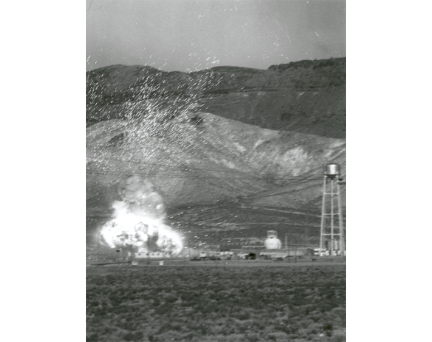

Today in 1965, a nuclear rocket engine exploded in the Nevada desert—scientists purposefully set off the blast, sparking political controversy that lingered for decades.
The experiment coincided with the rise of the atomic bomb and the surging space age, as the United States and the Soviet Union duked it out to achieve cosmic supremacy. Four years earlier, the U.S. had launched its first spacecraft powered by nuclear energy—the heat from a nuclear reaction sending a rocket whizzing spaceward. But the precise risks of a launch gone sideways remained unclear.
“One continuing nightmare of the atomic age is the possibility that somewhere, some time, a nuclear reactor may go out of control and blow itself to bits like an overheated steam-age boiler with its safety valve tied down,” according to a Time article published on Jan. 22, 1965. “Builders and promoters of reactors insist that this is highly improbable, but the Atomic Energy Commission wants more facts—just in case.”

ROCKET RISKS: The moment the Kiwi reactor blew to bits in Jackass Flats, Nevada. Photo by NASA / Wikimedia Commons.
The U.S. Atomic Energy Commission oversaw the development of peacetime nuclear science and technology from 1946 to 1975. For more clarity on potential rocket accidents, the commission vaporized part of a prototype Kiwi nuclear reactor core on Jan. 12, 1965, in Jackass Flats, Nevada by abruptly boosting power on the generator. They aimed to observe the impacts on the reactor and surrounding environment. Scientists set the Kiwi on a railroad car and placed test objects around it, including nuclear fuels and explosives.
The reactor reached temperatures above 8,000 degrees Fahrenheit—nearly as hot as the sun’s surface—and hundreds of pounds of uranium fuel transformed into vapor.
Then, “a cloud of grey smoke rose up with a ball of fire at its heart; out of it spouted flashes of light like giant Fourth of July sparklers,” Time reported. “Observers heard a loud bang and felt a modest shock wave.”
Read more: “What Nuclear War Means for the Ocean”
As the cloud cleared, Air Force bombers dropped in to gather air samples. Researchers hoped that the radioactive fallout would travel away from inhabited parts of Nevada. But the explosion instead whisked a radioactive cloud more than 200 miles southwest to Los Angeles.
Technically, the test went off without a hitch—it matched predictions from researchers at Los Alamos Scientific Laboratory, and the results suggested that nuclear-powered rockets could be vaporized into wee bits in space at the end of their missions.
To gauge the impacts on surrounding populations, the U.S. Public Health Service monitored the nearby neighborhood and gathered milk samples in parts of southern Nevada and California covering more than 200 miles downwind of the test site. The government also tracked the fallout cloud as it traveled the skies. Ultimately, testing revealed that “estimated radiation doses to humans beyond the test site were well below current limits set by the Environmental Protection Agency,” The Associated Pressreported.
There was, however, some political fallout. An Associated Press article publicizing the test prompted the Soviet Union’s government to question whether the U.S. was violating a treaty that banned nuclear weapons testing, but the Department of State informed the USSR that “reactors are designed as stable power sources and are intrinsically unsuitable for use as weapons.”
In 1994, Massachusetts Representative Edward J. Markey released documents on the test, as part of a broader inquiry into covert radiation experiments during the Cold War. “Elements of the nuclear-powered rocket program should qualify as human experiments,” Markey wrote. He also urged that such tests should include “a public discussion of radiation protection measures and anticipated doses to workers and the public,” according to The Associated Press.
In a 1986 report, Markey shared details on 31 nuclear experiments spanning the 1940s through the 1970s, in which “about 695 persons were exposed to radiation which provided little or no medical benefit to the subjects.” He referred to these participants as “American nuclear guinea pigs” and requested that those involved be compensated for damages—they later received a total of nearly $5 million from the government.
While the world avoided mass destruction during the Cold War, the Kiwi blast and other tests investigated by Markey illuminate how this standoff still hit close to home. 
Enjoying Nautilus? Subscribe to our free newsletter.
Lead image: AEC-NASA / Wikimedia Commons.